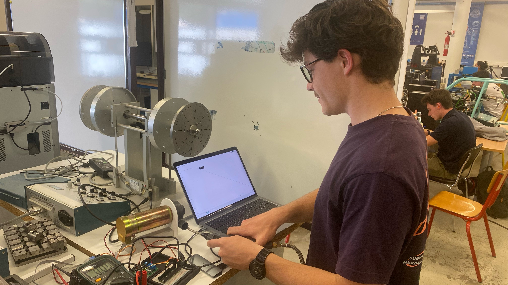
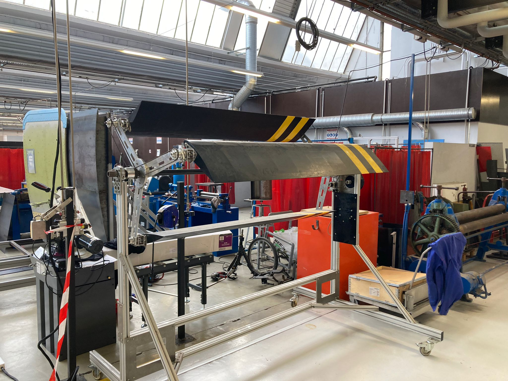
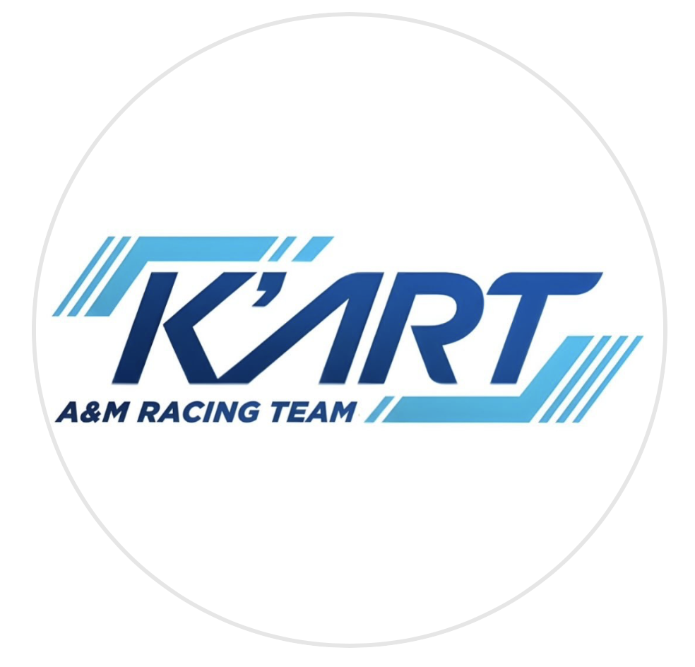
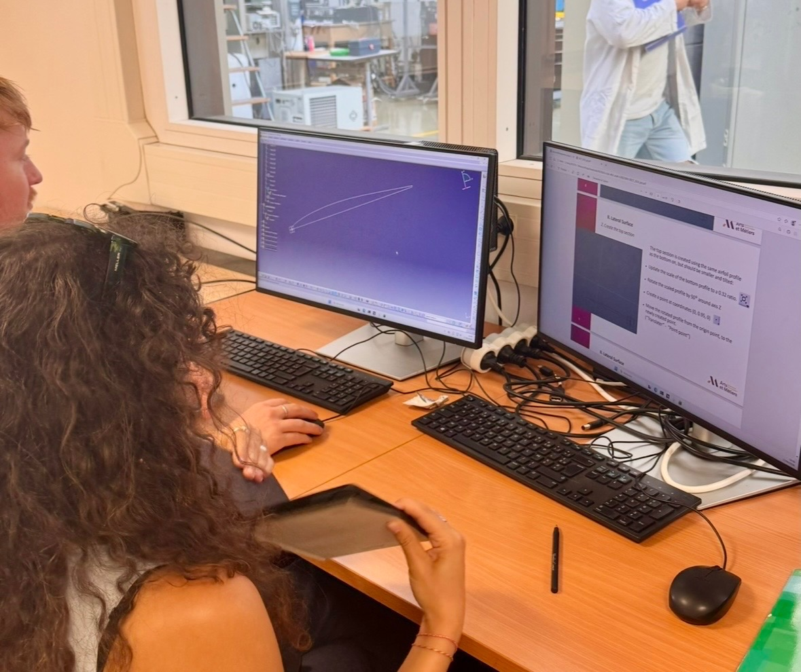
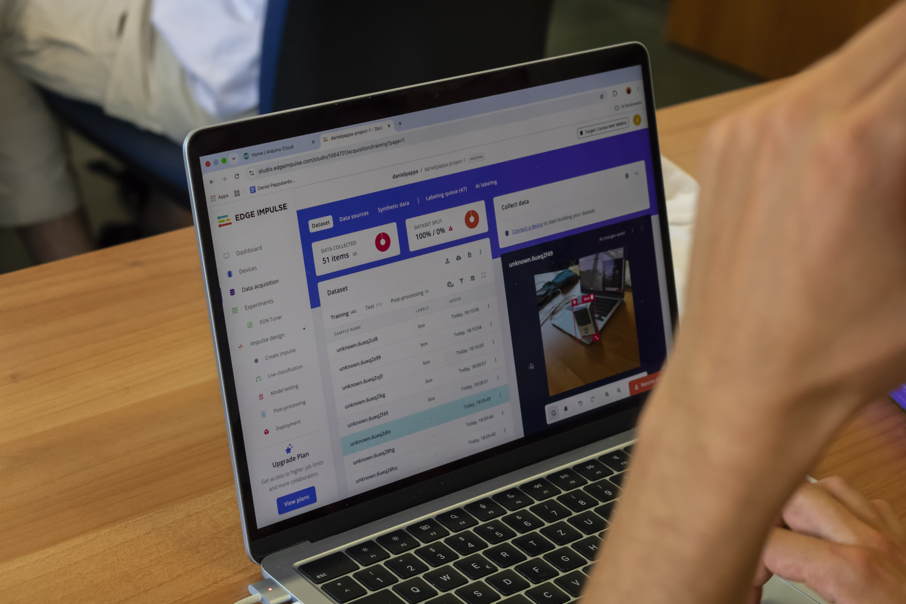
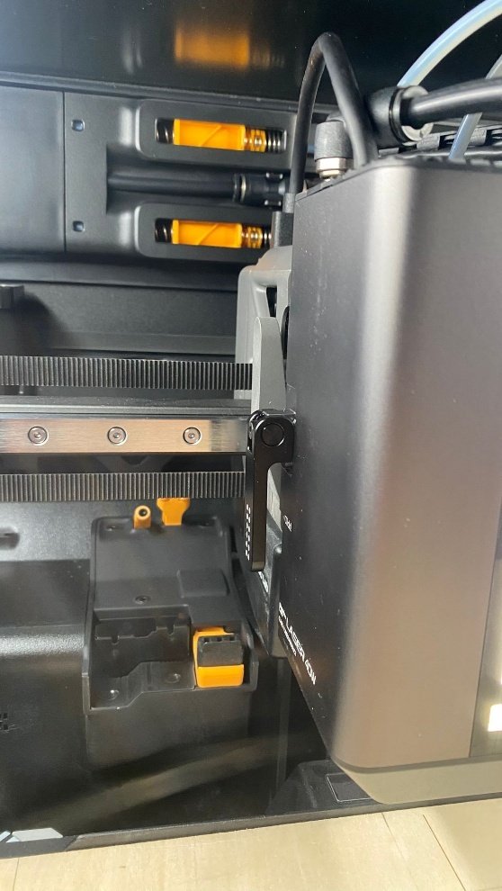

Turning complex systems into physical proof.
Mechanical engineering student at École Nationale Supérieure d’Arts et Métiers. I work across energy systems, sustainable design, electric mobility, embedded intelligence and additive manufacturing.
Build. Test. Iterate.
Each project connects a technical question to a tangible outcome: a tested rig, a validated analysis, a manufactured part, or a working software-hardware system.

MGU-H energy recovery
Compressed-air turbine, DC generator and measured load sweep.

Urban wind turbine
4.6 kW drivetrain design, kinematics and mechanical verification.

Electric kart
Race-ready conversion through structural, thermal and aerodynamic design.

Next-generation surfboard
Bio-inspired product thinking, CAD and rapid prototyping.

Autonomous vehicles
Embedded systems, ROS 2 and computer vision in Messina.

GRYP 3D
From production finishing to scanning, laser processing and reverse engineering.
Engineering is a conversation between models, materials and measurements.